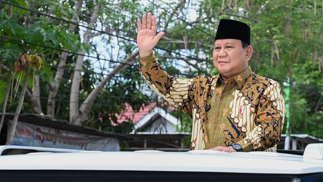

Prabowo Buka Suara Soal Pertemuan di Kertanegara dengan Ketum KIM Plus
Purwakarta, AboutNEWS -- Purwakarta, AboutNEWS -- Presiden Prabowo Subianto buka suara soal pertemuannya dengan sejumlah ketua umum partai politik Koalisi Indonesia Maju (KIM) Plus di Kertanegara, Sabtu (28/12) sore. Prabowo mengatakan bahwa pertemuan tersebut merupakan pertemuan rutin yang biasanya digelar setiap pekan. Namun, dalam beberapa pekan terakhir pertemuan itu tak terlaksana karena dirinya baru selesai kunjungan ke luar negeri.
Ketum Parpol KIM Plus Temui Prabowo di Kertanegara, Bahas Kenaikan PPN "Pertemuan kan sudah beberapa saat saya keliling pergi ke luar negeri, sudah berapa minggu, biasanya kita seminggu sekali pasti ketemu, jadi ini dalam rangka menghadapi libur," kata Prabowo usai menghadiri perayaan Natal Nasional di Indonesia Arena, GBK, Jakarta, Sabtu (28/12). Dia tak menjawab saat ditanya apakah pertemuan termasuk membahas rencana kenaikan PPN 12 persen yang akan berlaku mulai 1 Januari 2025. Dia juga menjawab santai soal kritik terhadap kebijakan tersebut.
Ketua Harian Partai Gerindra Sufmi Dasco Ahmad mengungkap pertemuan sejumlah ketum parpol dari KIM Plus di kediaman Prabowo membicarakan sejumlah hal, termasuk mengenai rencana kenaikan Pajak Pertambahan Nilai (PPN) dari 11 persen menjadi 12 persen. "Tadi yang umum-umum itu ngomongin tentang ekonomi di akhir tahun, termasuk ngomongin juga tentang kenaikan PPN dari 11 [persen] ke 12 [persen]," kata Dasco, melansir Detik, Sabtu (28/12). Sebelumnya, sejumlah ketum parpol KIM Plus bungkam usai menghadiri pertemuan di kediaman Prabowo di Kertanegara, Jakarta Selatan, Sabtu (28/12) petang. Pertemuan berlangsung sekitar dua jam.
Prabowo di Perayaan Natal Nasional: Kami Tak Ada Niat Persulit Rakyat "Biasa lah," ujar Ketua Umum Partai Golkar Bahlil Lahadalia saat dikonfirmasi mengenai pertemuan tersebut. Sementara itu, sejumlah ketua umum parpol lain seperti Ketua Umum PAN Zulkifli Hasan, Ketua Umum PKB Muhaimin Iskandar, Ketua Umum Demokrat Agus Harimurti Yudhoyono (AHY) dan Presiden PKS Ahmad Syaikhu langsung menaiki mobil yang sudah menunggu di halaman rumah Prabowo. Beberapa di antara mereka hanya memberi lambaian tangan.